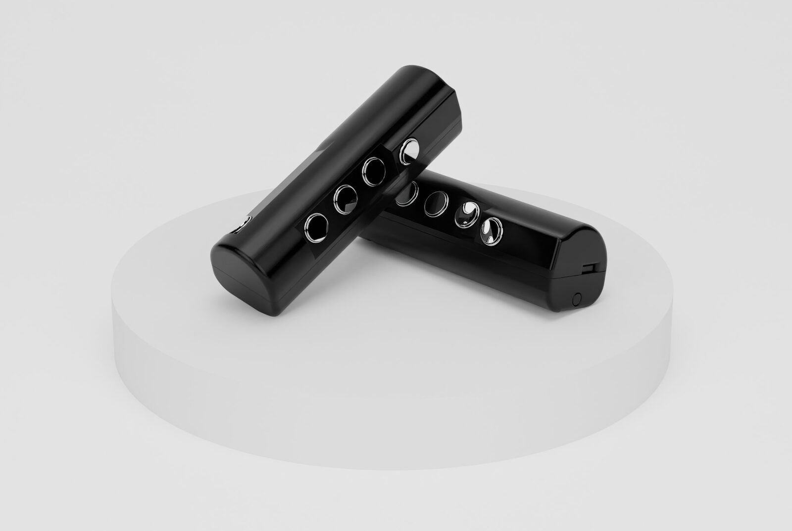

Spherical tendency of wrist movement
Project Description
Spherical tendency of wrist movement (STOWM) is an artistic project involving two performers, four gestural controllers, reactive video and immersive audio diffusion. It focuses on relating the performer's gesture in the real world with an abstract three-dimensional audiovisual space based on the mapping of gestural data acquired in realtime.


IANG controllers
Aware of the importance of gesture as a contribution to the intelligibility of musical discourse and performing arts in general, the 3D printed controllers used in STOWM (called IANG) are able to capture the movements of fingers and arms, harking back to a traditional concept of musical instrument but also expanded by the current possibilities offered by technology. By mapping gestural data to control specific audiovisual parameters, a close relationship can be established between performer action, sound and image. The controllers integrate a dual-core processor Wi-Fi embedded board, a high-precision 6-axis motion sensor, and 5 buttons activated by the performer's fingers.
Category
Option 1: “New NIME” - piece performed or composed with new interfaces for musical expression.
Program Notes
Spherical tendency of wrist movement is a study on the relationship between gesture, sound and image in which the audiovisual content stands as an abstraction of a moving source in the real world. The reality of gesture is intended as a generator of complexity that manifests itself in synthetic and virtual domains through fluctuations of the audiovisual parameters. The generated product is characterized by an evident formal instability, in constant tension towards the search for a shape.
Media
Spherical tendency of wrist movement (gestural controllers, electronics and video, 2021). Listening with headphones is recommended.
Acknowledgements
This artistic project was commissioned on the occasion of Living Lab Music 8 showcase at Pase Platform, Venice, Italy.
Performers: Camilla Carol Farias and Julian Scordato.
The development of IANG controllers was supported by SaMPL - Sound and Music Processing Lab, Department of New Technologies and Musical Languages of the Conservatory of Padua, Italy.